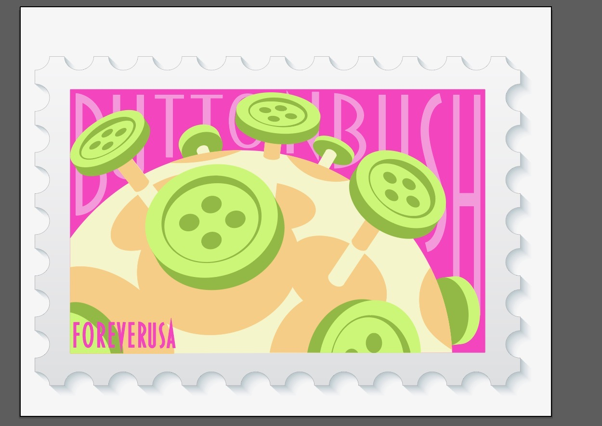
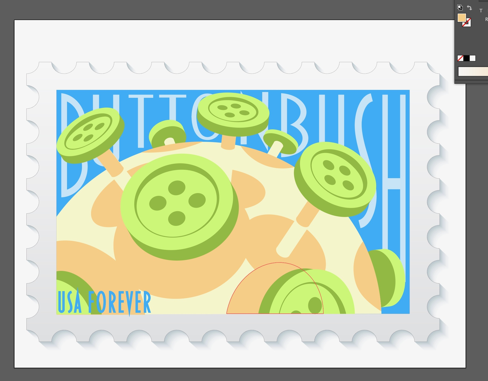
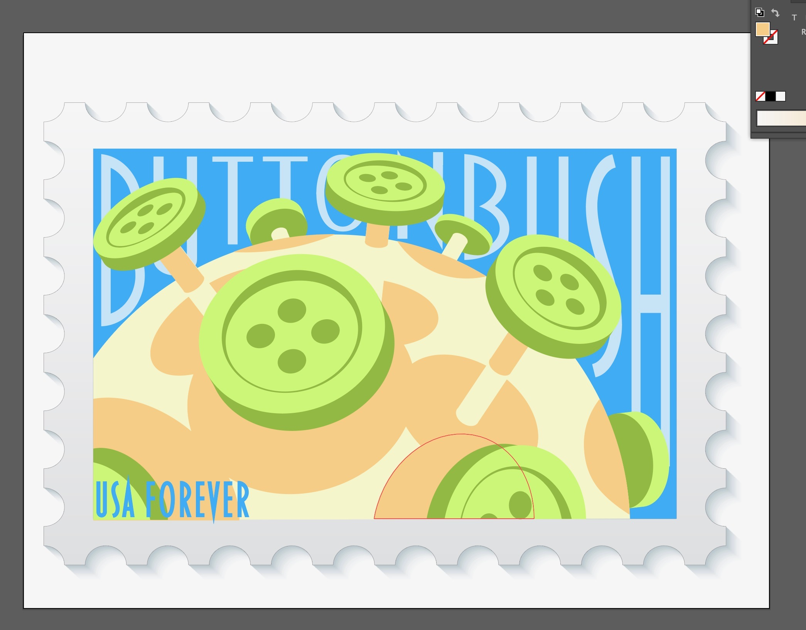
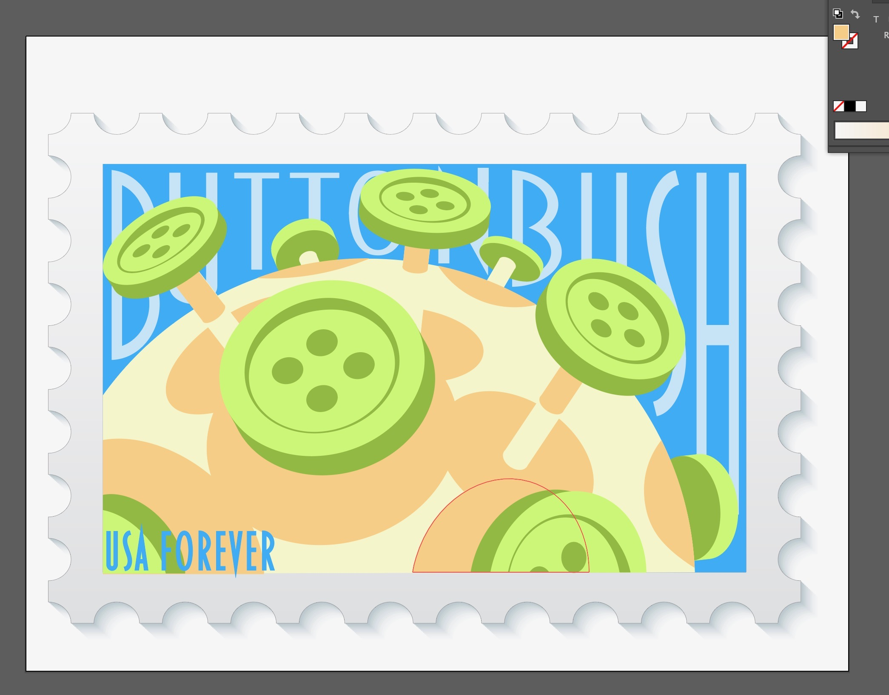
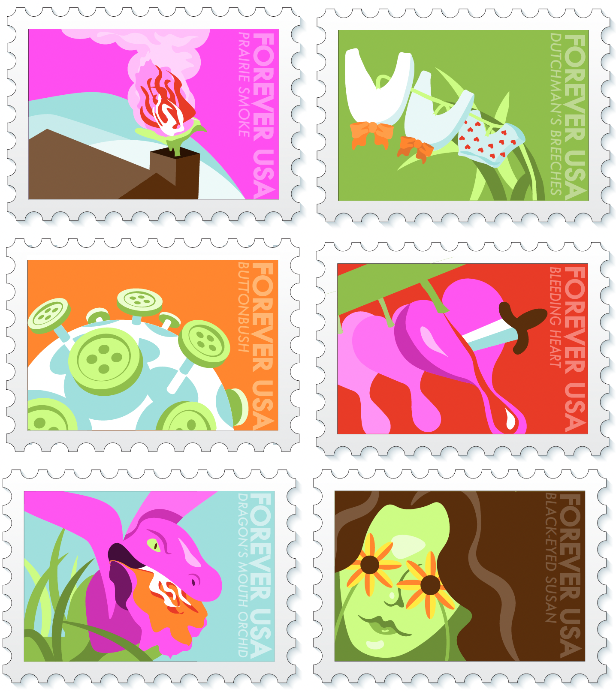

Grace Jermstad
Stamp Collection
A set of six distinct yet harmonious stamp designs creatively inspired by native Michigan plants, while ensuring compliance with stamp design regulations to deliver a cohesive and visually captivating collection.

The Assignment
Design and develop a Stamp Collection: 6 stamps all relating to the native flora and fauna of Michigan. Produce 6 separate yet cohesive designs. Establish a consistent system to represent the collection.
Sketches and Ideation
Upon researching different native Michigan plants, I found that many of them had unique names that alluded to their appearance. The creativity and humor of these names inspired me, so I decided to create a collection of stamps that plays on how the names reference the plants' resemblances.

 


The Final Collection
